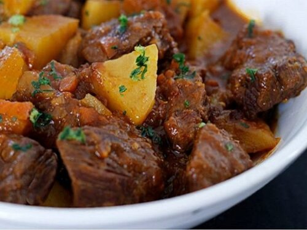

Costela na Panela de Pressão

Descrição
A receita de costela na panela de pressão é um excelente prato para chamar a família ou os amigos. Para acompanhamento pode ser usado arroz branco, farofa ou mandioca, cai muito bem com uma cerveja geladinha.
Ingredientes
- 1kg de costela bovina
- 100g de bacon sem pele
- 6 cebolas grandes
- Pimenta-de-cheiro a gosto
- Sal a gosto
Modo de Preparo
- Tempere a costela com pouco sal e reserve
- Descasque as cebolas e corte em rodelas
- Pegue a metade das cebolas e faça uma camada no fundo da panela de pressão
- Coloque a costela em cima da camada de cebola e acrescente o bacon
- Cubra a costela e o bacon com a outra metade das cebolas
- Tampe a panela e leve em fogo médio, por 45 minutos ou até o líquido dentro dela seque.
- Não é preciso colocar água, a cebola e a costela vão soltar muita água.